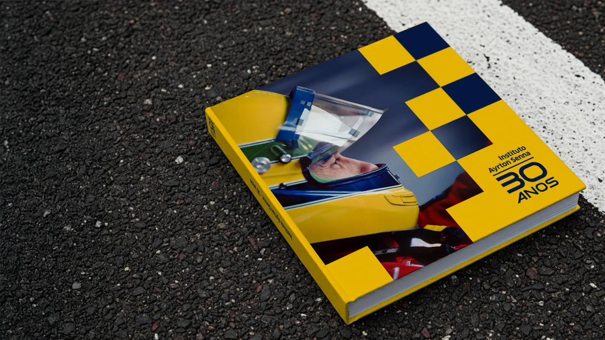
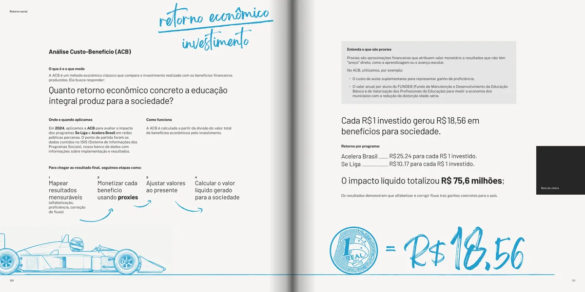
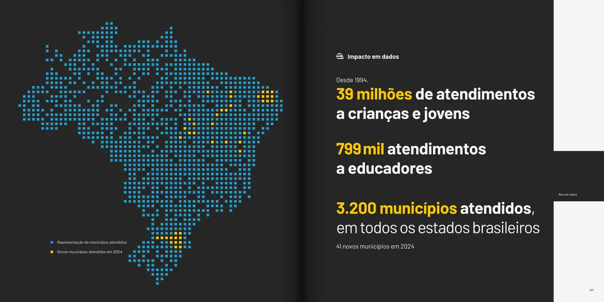
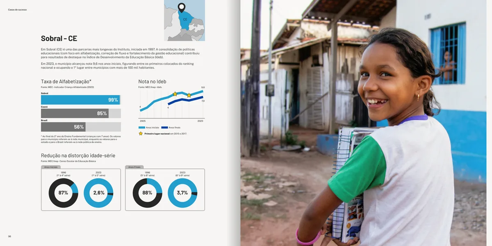
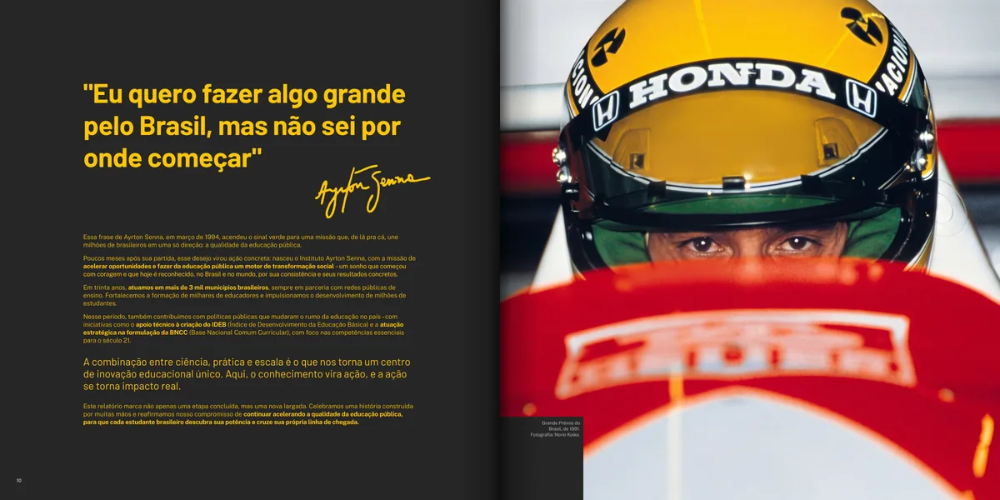
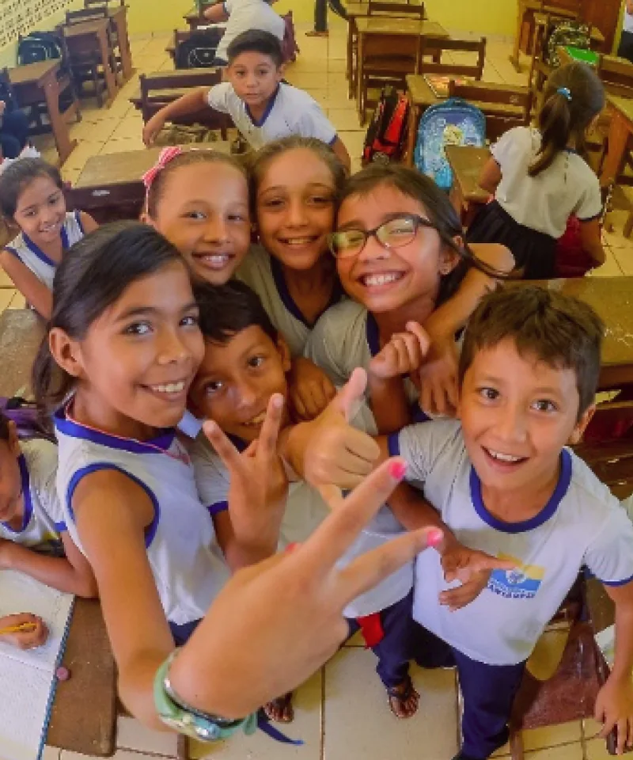

30 anos do Instituto Ayrton Senna






Uma concorrência criativa que a Quebra venceu com um conceito: "O ídolo Ayrton Senna como o farol que iluminou uma causa: levar educação de qualidade para todas as crianças e jovens do Brasil. Essa inspiração virou um Instituto que, 30 anos depois, já impactou 39 milhões de pessoas, em todos os estados."
"É comum comentários dizendo que nunca viram uma escola nossa", disse a CMO do IAS, Priya Patel. "Queremos romper a bolha do 'eduquês'", disse o vice-presidente, Ewerton Fulini. Programas e pilares se cruzavam e a comunicação pagava o preço.
Entrevistamos cada área e ouvimos egressos. Reorganizamos oito programas, três pilares e o lugar exato do Instituto no ecossistema da educação. Com mensagens-chave e hierarquia de informação, traduzimos casos de sucesso, SROI e ACB sem perder precisão. Artisticamente optamos por utilizar apenas imagens reais de crianças; IA entrou apenas para remover marcas tabagistas e devolver vida às imagens históricas do ídolo.
Discovery + alinhamento de discurso + hierarquia de informação + livro de 136 páginas em seis capítulos + todo o material se tornando peças multiformato para redes sociais (tudo em bases abertas).
Esse é um trabalho já concluído, mas inédito. Por isso, trouxemos imagens aprovadas e liberadas para representá-lo, mas não o material completo para download. No entanto, como prova de nossa relação prolífica com o IAS, você pode baixar uma Magazine realizada com os mesmos parâmetros.